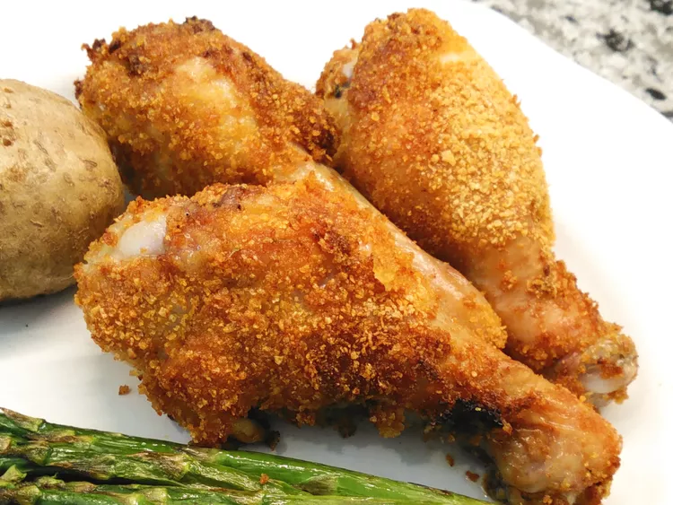

Cornflake-Crusted Chicken Drumsticks in the Air Fryer

Description
Cornflake chicken drumsticks are breaded with a delicious crispy crust and cooked in the air fryer for a quick and weeknight dinner.
Prep Time : 10 mins
Cook Time : 20 mins
Total Time : 30 mins
Servings : 2
Yield : 8 croissants
Ingredients
- 1 egg
- 1 tablespoon water
- ½ cup cornflake crumbs
- ½ teaspoon garlic powder
- ½ teaspoon onion powder
- ½ teaspoon salt
- ¼ teaspoon Cajun seasoning
- ¼ teaspoon chili powder
- ¼ teaspoon paprika
- 6 large chicken drumsticks
- salt to taste
- nonstick cooking spray
Directions
- Mix together egg and water in a shallow bowl. Combine cornflake crumbs, garlic powder, onion powder, 1/2 teaspoon salt, Cajun seasoning, chili powder, and paprika in a second shallow bowl.
- Preheat the air fryer to 400 degrees F (200 degrees C).
- Season drumsticks on both sides lightly with salt. Dip each drumstick into the egg mixture, followed by the cornflake mixture, rolling drumsticks and pressing down to ensure all surfaces are coated.
- Spray the top of the chicken with cooking spray and place, sprayed side down, into the air fryer basket. Spray top of the drumsticks - you may need to put the drumsticks on their side depending on how large they are.
- Air-fry for 10 minutes and carefully turn them over. Lower the temperature to 325 degrees F (160 degrees C). Cook for an additional 10 minutes or until the internal temperature of the chicken is at least 165 degrees F (74 degrees C). Check doneness after 5 minutes as drumstick size will determine time.
Home